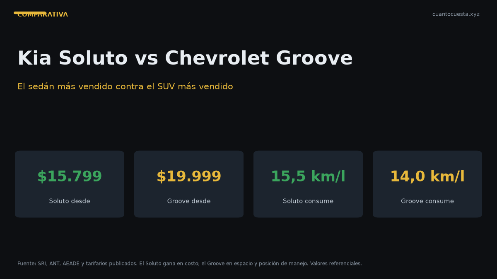

Kia Soluto vs Chevrolet Groove: cuál conviene en Ecuador (2026)
El sedán más vendido de Ecuador contra el SUV más vendido: precio, consumo, espacio, seguridad y costo a 5 años. Veredicto claro por perfil de comprador.

Si buscas el menor costo total y el mayor maletero, el Kia Soluto gana. Si necesitas altura al piso, posición de manejo elevada y hasta $309 al mes de cuota, el Chevrolet Groove gana. Son los dos autos más vendidos de su categoría en Ecuador: 8.725 unidades el Soluto y 4.063 el Groove en 2025.
Pero la diferencia real no es el precio de lista. Está en cuánto cuesta mantenerlos cinco años y en qué tipo de uso les saca provecho cada uno.
El Soluto cuesta entre $4.200 y $5.700 menos que el Groove en la versión de entrada, pero el Groove es el único de los dos con carrocería elevada y red de servicio Chevrolet en ciudades intermedias.
Ficha técnica frente a frente
| Dato | Kia Soluto | Chevrolet Groove |
|---|---|---|
| Precio | $15.799 – $18.790 | $19.999 – $24.490 |
| Motor | 1.4 L MPI, 4 cil., 16 válvulas | 1.5 L DVCP |
| Potencia | 94 hp a 6.000 rpm | 98 hp |
| Torque | 132 Nm a 4.000 rpm | 143 Nm |
| Transmisión | Manual 5 vel. / automática 4 vel. | Manual 6 vel. |
| Carrocería | Sedán B | SUV compacto |
| Largo | 4.405 mm | 4.220 mm |
| Maletero | 475 L | No especificado en la ficha consultada |
| Peso | 1.095 kg | No especificado |
| Origen | Corea del Sur | No especificado |
El Soluto es 185 mm más largo que el Groove, pero el Groove es un SUV: gana en despeje del suelo y en posición de manejo, no en largo total.
Consumo: donde el Soluto saca ventaja
| Ciclo | Soluto MT | Soluto AT | Groove |
|---|---|---|---|
| Urbano | 13,8 km/l | 12,5 km/l | No especificado |
| Carretera | 18,2 km/l | 16,8 km/l | No especificado |
| Mixto | 15,5 km/l | 14,2 km/l | No especificado |
La ficha técnica de Chevrolet Ecuador no publica consumo homologado del Groove. Con 1.5 L y peso de SUV compacto, el rango esperable está entre 12 y 14 km/l mixto — verifícalo en tu prueba de manejo, no lo tomes como dato oficial.
A 12.000 km al año con Extra o Ecopaís a $3,21 el galón:
- Soluto MT: 774,2 litros al año → $666,81 al año
- Soluto AT: 845,1 litros al año → $727,85 al año
- Groove (supuesto 13 km/l mixto): cerca de $800 al año
La diferencia en combustible ronda los $70 a $150 anuales. No es lo que decide la compra.
Espacio y equipamiento
El Soluto es un sedán con 475 L de maletero: más de lo que ofrece buena parte de los SUV compactos del mercado. Pesa 1.095 kg, lo que se siente en ciudad: es ágil, fácil de estacionar y barato de mover.
El Groove responde a otra lógica: asientos reclinables abatibles 60/40, detalles en ecocuero, pantalla táctil de 8" y una posición de manejo elevada. No gana en volumen de maletero, gana en modularidad y en cómo se siente al manejar.
En la versión EX, el Soluto suma rines de aleación, sensores de reversa, cámara trasera, pantalla táctil de 8", volante multifuncional y Android Auto más Apple CarPlay. Es el nivel de equipamiento que en el Groove aparece según versión.
Seguridad
| Elemento | Kia Soluto | Chevrolet Groove |
|---|---|---|
| Airbags | 6 (versión EX) | 4 |
| ABS + EBD | Sí | Sí |
| Control de estabilidad | Sí (ESC) | Sí |
| Asistente de arranque en pendiente | Sí | Sí |
El Soluto EX ofrece 6 airbags contra 4 del Groove. En seguridad pasiva, el sedán de Kia tiene la ventaja en la versión tope.
Garantía: la diferencia más grande del comparativo
- Kia Soluto: 10 años o 160.000 km
- Chevrolet Groove: 7 años o 150.000 km
Tres años más de cobertura son tres años en los que un fallo de fábrica no sale de tu bolsillo. Para un comprador que financia a 5 o 7 años, la garantía del Soluto cubre todo el plazo del crédito.
Costo a 5 años, con números
Supuestos: 12.000 km al año, combustible Extra/Ecopaís a $3,21 el galón, matrícula de referencia $180 al año, seguro estimado en 4% del valor el primer año. El mantenimiento de concesionario no está publicado por marca en nuestras fuentes; en marcas generalistas se mueve entre $300 y $600 al año, así que usamos $450 como referencia para ambos.
| Rubro a 5 años | Kia Soluto EX ($18.790) | Chevrolet Groove Premier ($24.490) |
|---|---|---|
| Combustible (MT) | ~$3.334 | ~$4.000 |
| Mantenimiento | ~$2.250 | ~$2.250 |
| Matrícula | ~$900 | ~$900 |
| Seguro (año 1, 4%) | $751,60 | $979,60 |
| Diferencia de precio de compra | Base | +$5.700 |
Aun con el mantenimiento igualado, el Groove arranca la carrera $5.700 por detrás por precio de lista. Esa diferencia no se recupera en consumo ni en mantenimiento.
¿Y los rivales directos?
| Modelo | Precio desde | Motor | Nota |
|---|---|---|---|
| Kia Soluto | $15.799 | 1.4 L, 94 hp | Sedán más vendido del país |
| Chevrolet Sail | $16.500 | 1.5 L, 105 hp | Más potencia, menos garantía |
| Hyundai Accent | $17.890 | No especificado | Rival natural del Soluto |
| Nissan Versa | $18.500 | 1.6 L, 106 hp | Más motor, precio más alto |
| Chevrolet Groove | $19.999 | 1.5 L, 98 hp | SUV más vendido del país |
El Versa tiene 12 hp más que el Soluto por unos $2.700 más. El Sail cuesta $700 más pero queda por debajo en garantía y en red de posventa frente a Kia.
Para quién es cada uno
Elige el Kia Soluto si:
- Tu prioridad es el costo total más bajo a 5 años
- Manejas sobre todo asfalto en ciudad y carretera
- Quieres el maletero más grande (475 L)
- Valoras la garantía de 10 años o 160.000 km
- Prefieres 6 airbags en la versión EX
Elige el Chevrolet Groove si:
- Manejas caminos de lastre, baches o zonas rurales con frecuencia
- Quieres posición de manejo elevada y asientos modulares 60/40
- Necesitas red de servicio en ciudades intermedias, no solo en Quito y Guayaquil
- Tu presupuesto de cuota arranca en $309 al mes
- El despeje del suelo importa más que el maletero
Veredicto
Ganador en costo total: Kia Soluto. Es el más barato de comprar, de mover y de cubrir, con la garantía más larga del comparativo. Si el 90% de tu recorrido es asfalto, no hay razón para pagar $5.700 más.
Ganador en versatilidad: Chevrolet Groove. Es el SUV más vendido del Ecuador por una razón práctica: hace lo que un sedán hace, más lo que un sedán no puede hacer en camino malo.
Un dato final que ordena la decisión: el Groove se vende más que cualquier otro SUV del país, y el Soluto más que cualquier otro sedán. Los dos son apuestas seguras en repuestos y reventa. La pregunta real no es cuál es mejor, sino si vas a usar el despeje del suelo. Si la respuesta es no, el Soluto.
Precios referenciales de lista a septiembre de 2026. Varían por agencia, versión y promoción. No constituye asesoría financiera.
Sigue leyendo
D-Max vs GWM Poer vs Hilux: qué camioneta conviene en Ecuador
Las tres camionetas 4x4 más vendidas de Ecuador frente a frente: precio, ensamblaje local, mant
Kia Sonet vs Hyundai Creta: comparativa completa en Ecuador
Sonet y Creta no compiten en el mismo segmento. Comparamos espacio, consumo, garantía y precio
Mejor carro para comprar en Ecuador 2026: guía por presupuesto
Cuatro rangos de presupuesto y un ganador claro en cada uno: desde $14.000 hasta $35.000+, con
Cómo usamos estos datos
Las cifras de esta guía provienen de fuentes públicas oficiales y tarifarios de concesionarios publicados. Los valores son referenciales: tasas municipales, promociones y precios de repuestos varían. Verifica siempre en la entidad o concesionario antes de decidir.